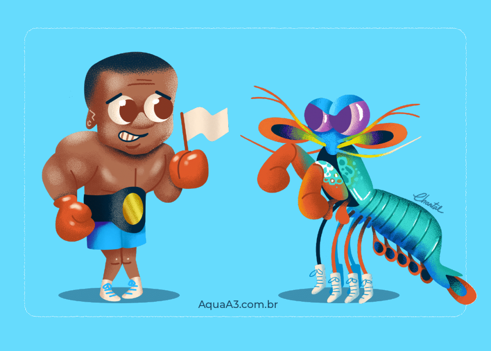
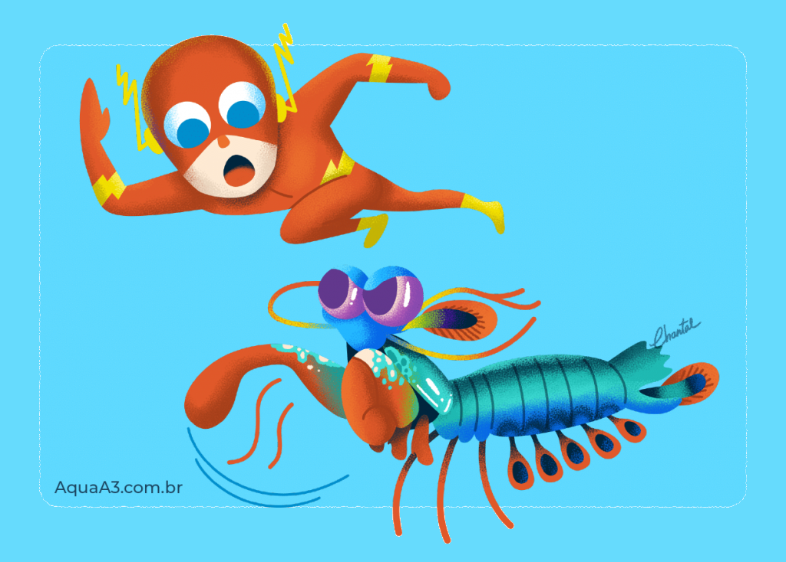
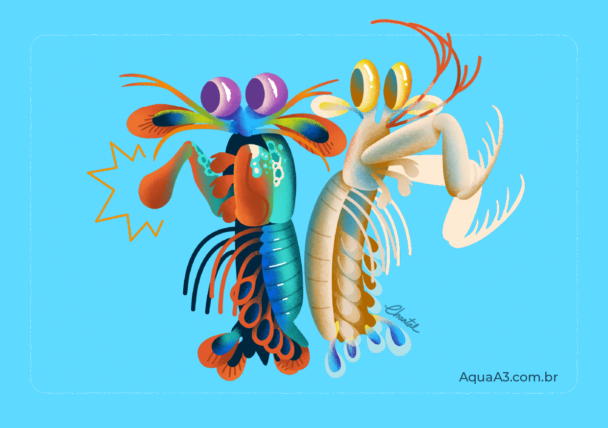

Fatos sobre o Stomatopoda
Odontodactylus scyllarus
Stomatopoda (ou estomatópode), chamados popularmente de tamarutacas ou de lacraias-do-mar no Brasil, é uma ordem de crustáceos marinhos da subclasse Hoplocarida, que agrupa cerca de 400 espécies, caracterizadas principalmente pela morfologia da segunda pata torácica, que é modificada em apêndice subquelado, lembrando uma pata de louva-a-deus.[2]
One Punch Crustáceo
O Camarão Mantis esmagador possui dois apêndices bem desenvolvidos (semelhantes a um martelo), chamados de Porretes de Dáctilo. Com essas “super patas” o animal espanca e esmaga suas presas em uma intensidade de aproximadamente 60 kg/cm² (daí o motivo de um de seus nomes ser lagosta-boxeadora).
Mais rápido que uma Bala
Além da enorme potência de seu soco, esse animal consegue movimentar seus apêndices tal qual um tiro de arma de fogo: seu golpe pode chegar a uma velocidade 720 km/h. Curiosamente, tanto a força quanto rapidez do ataque, não danificam sua estrutura corporal.
Um pokemon de 2 tipos
Devido a uma diferença anatômica de seus apêndices, o Camarão Mantis pode ser classificado em dois grupos: os que têm ataque perfurador (spearers) e esmagador (smashers). Com isso, os esmagadores são considerados um dos animais mais fortes e velozes do planeta, por terem um ataque rápido como uma bala e forte como um touro.